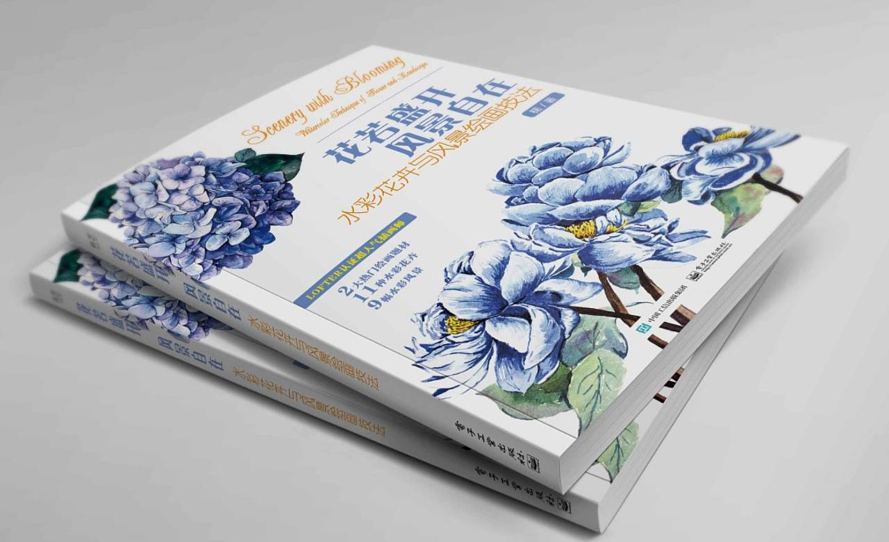
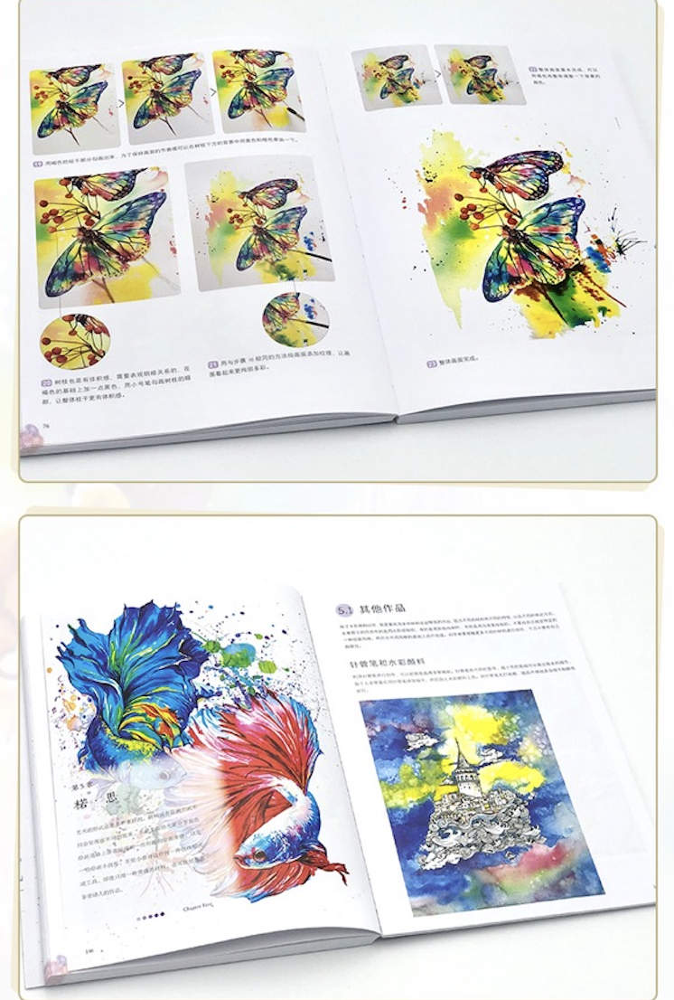

Earlier Works / Publications
Drawings in Printed Form / Publications
Two published drawing books developed from watercolor studies, botanical imagery, and printed book formats. These publications are shown as part of an early image-based practice where drawing, reproduction, layout, and book sequencing began to overlap.


Publication 2017 / Scenery with Blooming
A printed publication bringing watercolor flower and landscape studies into book form. The work records an early stage of drawing practice where illustration, printed layout, and instructional image sequence began to overlap.


Publication 2021 / Creative Watercolor Illustration
A later publication project extending watercolor drawing into a more developed printed format, where illustration, editorial sequencing, and reproducible image systems continued to shape the practice.